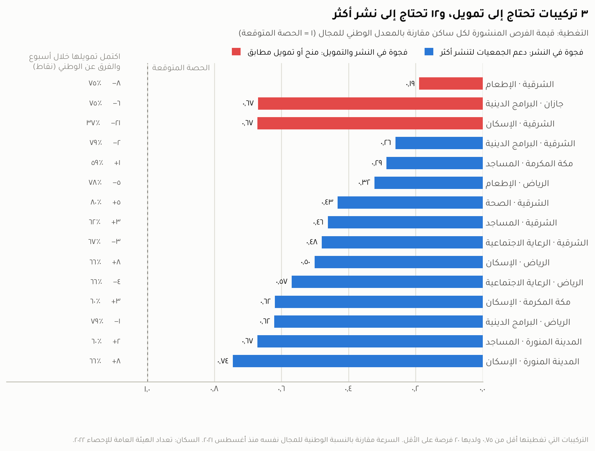
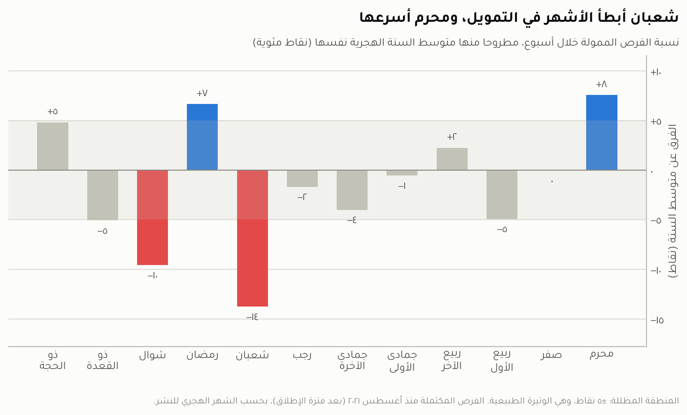
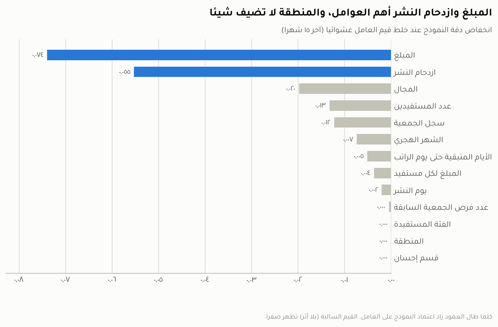
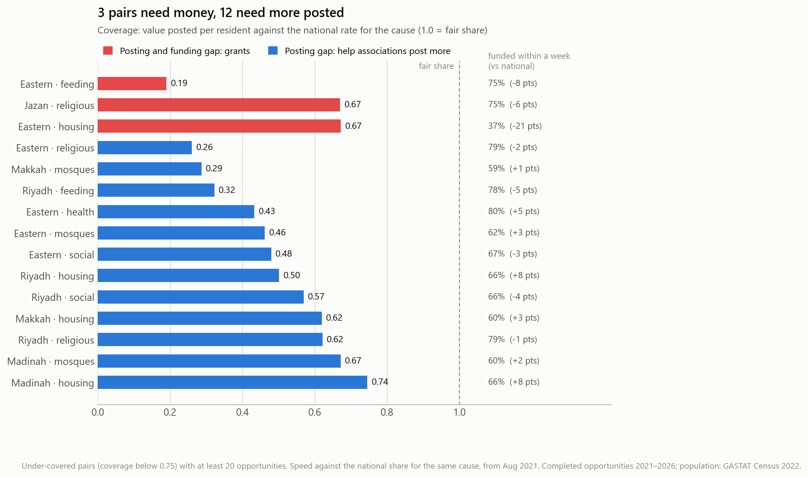
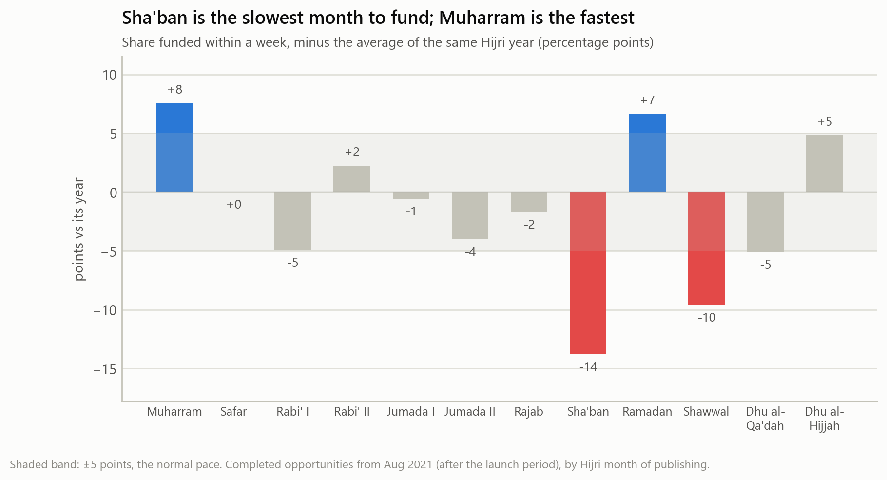
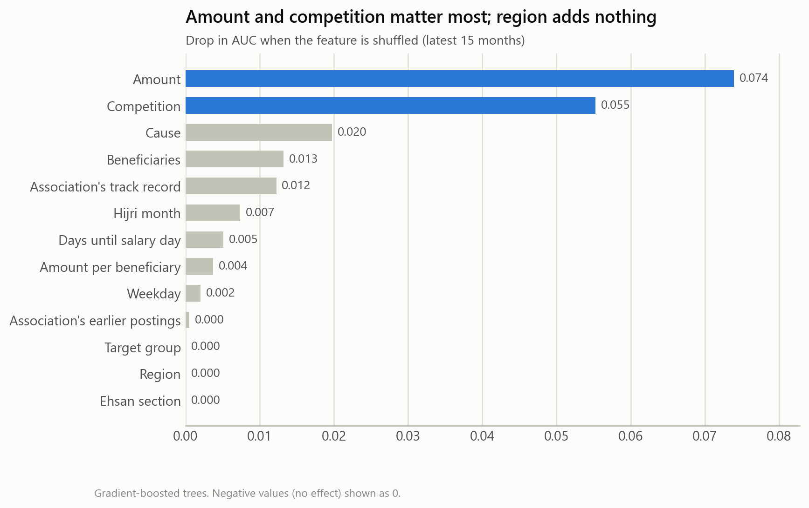

ما المناطق والمجالات التي تستحق الأولوية في المنح ودعم الجمعيات؟ تحليل لفرص التبرع المنشورة في قسم المشاريع على منصة إحسان خلال الفترة من فبراير ٢٠٢١ إلى أكتوبر ٢٠٢٦.
يقيس هذا التقرير، لكل منطقة ومجال، كم يُنشر من فرص التبرع مقارنةً بعدد السكان، وما سرعة تمويلها، ليحدد أين يكون الأثر الأكبر للمنح ولدعم الجمعيات.
النسخة الإنجليزية ترجمة كاملة للصفحات العربية. وجميع الأرقام في هذا التقرير محسوبة في دفتر التحليل، ويمكن إعادة إنتاجها بتشغيله من جديد.
ما المناطق والمجالات التي تستحق الأولوية في المنح ودعم الجمعيات؟ تحليل لفرص التبرع المنشورة في قسم المشاريع على منصة إحسان خلال الفترة من فبراير ٢٠٢١ إلى أكتوبر ٢٠٢٦.
منصة إحسان هي المنصة الوطنية للعمل الخيري. تنشر عليها الجمعيات فرص تبرع لمشاريعها، مثل توفير السلال الغذائية أو ترميم المساجد أو علاج المرضى، ويتبرع لها الناس حتى يكتمل المبلغ المطلوب. جُمعت من الصفحات العامة للمنصة بيانات كل فرصة نُشرت في قسم المشاريع: منطقتها، ومجالها، والجمعية التي نشرتها، ومبلغها، وتاريخ نشرها، وتاريخ اكتمال تمويلها.
وقُسّمت الفرص إلى تركيبات؛ والتركيبة هي منطقة ومجال معًا، مثل «الصحة في جازان» أو «الإسكان في المنطقة الشرقية». ثم استُخدم لكل تركيبة مقياسان:
وتُعدّ التركيبة ذات أولوية إذا كانت تغطيتها ٠٫٧٥ أو أقل، أي أنها لا تنال أكثر من ثلاثة أرباع حصتها، وكان لديها ٢٠ فرصة مكتملة على الأقل حتى يمكن الاعتماد على قياس سرعتها. ثم تُقسم هذه التركيبات بحسب سرعة تمويلها إلى نوعين، لكل منهما حل مختلف:
فرص التبرع المنشورة قليلة، لكن المتبرعين يموّلونها بوتيرة طبيعية أو أسرع. أي أن المشكلة في عدد الفرص المنشورة، لا في استجابة المتبرعين.
الحل: دعم الجمعيات لتنشر فرصًا أكثر.
فرص التبرع المنشورة قليلة، وتمويلها بطيء أيضًا.
الحل: منح مباشرة أو تمويل مطابق، مع إبراز هذه الفرص للمتبرعين. والتمويل المطابق هو أن يتعهد مانح بإضافة مبلغ مقابل كل ريال يتبرع به الناس.
كما تناول التحليل أثر توقيت النشر في سرعة التمويل، واستخدم نموذجًا لمعرفة العوامل المرتبطة ببطء التمويل.
تستحق المنطقة الشرقية الأولوية في توجيه الدعم؛ إذ تضم ٦ من أصل ١٥ تركيبة ذات أولوية. تليها الرياض بـ٤ تركيبات، ثم مكة المكرمة والمدينة المنورة بتركيبتين لكل منهما، وجازان بتركيبة واحدة.
وتشير النتائج إلى أن ١٢ من هذه التركيبات تعاني من فجوة في النشر، لا من ضعف استجابة المتبرعين. لذلك، يُرجّح أن يكون الأثر الأكبر من الاستثمار في قدرة الجمعيات على إعداد فرص التبرع ونشرها، بدلًا من زيادة التمويل الموجّه إلى الفرص المنشورة أصلًا.
أما التركيبات الثلاث التي تجمع بين قلة النشر وبطء التمويل، فتحتاج إلى منح أو تمويل مطابق: الإطعام والإسكان في المنطقة الشرقية، والبرامج الدينية في جازان.

بلغت قيمة الفرص المنشورة في المنطقة الشرقية ٢٣ ريالًا لكل ساكن، مقارنةً بـ١٩٧ ريالًا في منطقة الباحة. كما جاءت الشرقية دون حصتها المتوقعة من الفرص في جميع المجالات. ومع ذلك، تُموَّل معظم الفرص المنشورة فيها بوتيرة قريبة من المعدل الوطني.
ولمعرفة سبب قلة النشر، قُسّمت قيمة الفرص لكل ساكن إلى أربعة أجزاء: عدد الجمعيات الشريكة في إحسان لكل ساكن، ونسبة من ينشر منها مشاريع، وعدد الفرص التي تنشرها كل جمعية، ومتوسط حجم الفرصة. ويُقارن كل جزء بالمعدل الوطني.
ويبدو أن السبب الرئيسي في الشرقية هو محدودية مشاركة الجمعيات على المنصة: فعدد الجمعيات الشريكة لكل ساكن فيها يعادل ٠٫٤٣ من المعدل الوطني، ونسبة من ينشر منها مشاريع تعادل ٠٫٧٥ من المعدل الوطني. لكن الجمعيات التي تنشر مشاريعها أكثر نشاطًا من المتوسط، بمعدل ١٫٢٣ مرة.
وتواجه الرياض تحديًا مشابهًا في عدد الجمعيات الشريكة لكل ساكن، إذ يبلغ المؤشر فيها ٠٫٥١ من المعدل الوطني. أما في تبوك، فعدد الجمعيات الشريكة قريب من المعدل الوطني، لكن كل جمعية تنشر فرصًا أقل (٠٫٨٤ من المعدل الوطني) وبمبالغ أصغر (٠٫٨٢ من المتوسط الوطني).
تمت مقارنة كل شهر هجري بمتوسط السنة الهجرية نفسها، لأن بعض السنوات كانت أسرع من غيرها في مجملها. ويُعدّ شعبان أبطأ شهر في اكتمال التمويل؛ إذ جاءت نسبة الفرص التي اكتمل تمويلها خلال أسبوع أقل من متوسط السنة نفسها في السنوات الخمس جميعها، بفارق ١٤ نقطة مئوية في المتوسط. كما أن ٤٠٪ من فرص شعبان لا يكتمل تمويلها إلا خلال رمضان.
في المقابل، تُموَّل الفرص المنشورة في رمضان بوتيرة أسرع من متوسط السنة بـ٧ نقاط مئوية، رغم أن عدد الفرص المنشورة فيه يعادل أربعة أضعاف المعتاد. ويبلغ العطاء ذروته في يوم ٢٧ من الشهر الميلادي، وهو موعد صرف معظم الرواتب في المملكة، إذ يصل عدد الفرص المكتملة فيه إلى ١٫٦ مرة من مستواه في اليوم العادي، كما يرتفع يوم الجمعة إلى ١٫٥ مرة.

استخدم التحليل نموذجًا يقدّر احتمال أن يستغرق تمويل الفرصة أكثر من أسبوع، اعتمادًا على المعلومات المتاحة يوم نشرها فقط: المجال والمنطقة والمبلغ وعدد المستفيدين وتاريخ النشر وسجل الجمعية وعدد الفرص المنشورة في الوقت نفسه. والهدف من النموذج هو فهم أنماط التبرع، لا استخدامه لاتخاذ قرارات آلية على المنصة.
كان مبلغ الفرصة ومدى ازدحام النشر من أبرز العوامل المرتبطة بسرعة التمويل. وعلى خلاف ما قد يُتوقع، تُموَّل الفرص خلال الأسابيع المزدحمة، وخصوصًا في رمضان، بوتيرة أسرع لا أبطأ. ولم تُظهر المنطقة أثرًا إضافيًا يُذكر؛ إذ لا يبدو أن المتبرعين يستجيبون بصورة مختلفة باختلاف المنطقة.
أداء النموذج متوسط ومحدود (AUC = 0.70): فعند مقارنة فرصة بطيئة التمويل بأخرى سريعة، يعطي النموذج البطيئة احتمالًا أعلى في ٧٠٪ من الحالات تقريبًا، مقابل ٥٠٪ للتخمين العشوائي. ويعني ذلك أن جزءًا كبيرًا من حالات بطء التمويل لا يمكن التنبؤ به من المعلومات المتاحة وقت النشر، بل يتوقف على أمور مثل طريقة عرض الفرصة ووصفها والترويج لها.

| الجهة المعنية | التوصية | الدليل |
|---|---|---|
| أين تذهب المنح | ||
| المانحون والمركز الوطني لتنمية القطاع غير الربحي | توجيه منح أو تمويل مطابق إلى التركيبات الثلاث التي تجمع بين قلة النشر وبطء التمويل: الإطعام والإسكان في الشرقية، والبرامج الدينية في جازان، مع إبراز فرصها للمتبرعين على المنصة. | في فرص الإسكان بالشرقية، اكتمل التمويل خلال أسبوع لـ٣٧٪ من الفرص، مقابل ٥٨٪ على المستوى الوطني. |
| المانحون والمركز الوطني لتنمية القطاع غير الربحي | في التركيبات الاثنتي عشرة التي تعاني من فجوة في النشر، دعم قدرة الجمعيات على إعداد فرص التبرع ونشرها، بدلًا من زيادة التبرعات للفرص المنشورة. | تُموَّل الفرص المنشورة في هذه التركيبات بوتيرة طبيعية أو أسرع. |
| مشاركة الجمعيات على المنصة | ||
| المركز الوطني، بالتعاون مع إحسان | زيادة مشاركة الجمعيات المحلية في الشرقية والرياض على المنصة، ومساعدة جمعيات الشرقية على نشر أول مشاريعها. | عدد الجمعيات الشريكة لكل ساكن يعادل ٠٫٤٣ من المعدل الوطني في الشرقية، و٠٫٥١ في الرياض. |
| المركز الوطني، بالتعاون مع إحسان | متابعة الجمعيات بعد إنجاز مشروعها الأول، ومساندتها في إطلاق مشروع ثانٍ. | ٣٥٪ من الجمعيات لم تُكمل سوى مشروع واحد. |
| توقيت النشر وحملات التبرع | ||
| الجمعيات | عدم الاعتماد على شعبان وحده لتغطية الاحتياجات العاجلة، بل نشر الفرص خلال رمضان أو البحث عن تمويل مطابق. | كانت سرعة التمويل في شعبان أقل من متوسط السنة في السنوات الخمس جميعها. |
| الجمعيات | توقيت حملات التبرع ورسائل التذكير حول يوم ٢٧ وأيام الجمعة. | عدد الفرص المكتملة في يوم ٢٧ يعادل ١٫٦ مرة من اليوم العادي، وفي الجمعة ١٫٥ مرة. |
| الجمعيات | عدم تأجيل نشر الفرص لمجرد تجنّب الأسابيع المزدحمة. | بلغت نسبة الفرص بطيئة التمويل ٢٥٪ في ربع الأسابيع الأكثر ازدحامًا، مقابل ٣٢٪ في غيرها. |
| ما يكشفه النموذج | ||
| الجمعيات | تقسيم المبالغ الكبيرة جدًا إلى مراحل، متى سمحت طبيعة الاحتياج بذلك. | بلغت نسبة الفرص بطيئة التمويل ٣٥٪ ضمن الخُمس الأكبر من حيث المبالغ، مقابل ٢٩٪ لبقية الفرص. |
| المانحون والمركز الوطني لتنمية القطاع غير الربحي | مساندة الجمعيات التي يتكرر لديها بطء التمويل في عرض فرصها ووصفها والترويج لها. | بين الجمعيات التي لديها ٥ فرص مكتملة سابقة على الأقل، بلغت نسبة الفرص بطيئة التمويل ٤٧٪ لدى الربع الأبطأ، مقابل ٢٧٪ لدى البقية. |
«بطيئة التمويل»: فرصة استغرق اكتمال تمويلها أكثر من أسبوع.
Which regions and causes should come first for grants and support to associations? An analysis of the donation opportunities posted in the Projects section of Ehsan, February 2021 to October 2026.
Ehsan is Saudi Arabia's national giving platform. Associations post donation opportunities for their projects on it, such as food baskets, mosque repairs or treatment for patients, and people donate until the target is reached. Every opportunity posted in the Projects section was collected from Ehsan's public pages: its region, its cause, the association that posted it, its amount, the date it was posted and the date its funding was completed.
The opportunities were then grouped into pairs; a pair is a region and a cause together, such as "health in Jazan" or "housing in the Eastern Region". Two measures were used for each pair:
A pair is a priority if its coverage is 0.75 or less, meaning it receives no more than three quarters of its share, and it has at least 20 completed opportunities, so that its speed can be measured reliably. These pairs are then split by funding speed into two types, each with a different remedy:
Few donation opportunities are posted, but donors fund them at the normal pace or faster. The problem is how few opportunities are posted, not how donors respond.
Remedy: help associations post more.
Few donation opportunities are posted, and they are also slow to fund.
Remedy: direct grants or matching funds, while featuring these opportunities to donors. Matching funds means a funder pledges to add money for every riyal donated by the public.
The analysis also looked at how the timing of a posting affects funding speed, and used a model to find which factors are linked to slow funding.
The Eastern Region should come first: it holds 6 of the 15 priority pairs. It is followed by Riyadh with 4, Makkah and Madinah with 2 each, and Jazan with 1.
In 12 of these pairs the problem is a posting gap, not weak donor response. The greatest impact is therefore likely to come from investing in associations' ability to prepare and post opportunities, rather than adding money to the opportunities already posted.
The 3 pairs that combine few postings with slow funding need grants or matching funds: feeding and housing in the Eastern Region, and religious programmes in Jazan.

Opportunities worth SAR 23 per resident were posted in the Eastern Region, against SAR 197 in Al-Bahah, and the Eastern Region is below its expected share in every cause. Yet most opportunities posted there are funded at close to the national pace.
To find why little is posted, value per resident was split into four parts: the number of partner associations on Ehsan per resident, the share of them that post projects, the number of opportunities each posts, and the average opportunity size. Each part is compared with the national rate.
In the Eastern Region the main reason appears to be limited participation of associations on the platform: partner associations per resident are 0.43 of the national rate, and the share of them that post projects is 0.75 of it. Those that do post are more active than average, at 1.23 times. Riyadh faces a similar challenge, with 0.51 of the national rate of partner associations per resident. In Tabuk, the number of partner associations is close to the national rate, but each association posts fewer opportunities (0.84 of the national rate) and smaller ones (0.82 of the national average).
Each Hijri month is compared with the average of its own Hijri year, since some years were faster than others overall. Sha'ban is the slowest month: its share funded within a week was below its year's average in all five years, by 14 percentage points on average, and 40% of Sha'ban opportunities are completed only during Ramadan.
Ramadan, by contrast, funds 7 points faster than its year's average, although four times as many opportunities are posted in it. Giving peaks on the 27th of the Gregorian month, when most salaries in Saudi Arabia are paid, with 1.6 times the completed opportunities of an average day, and rises to 1.5 times on Fridays.

The analysis used a model that estimates the chance that an opportunity takes more than a week to fund, using only what is known on the day it is posted: cause, region, amount, number of beneficiaries, posting date, the association's track record, and how many other opportunities are posted at the same time. The purpose of the model is to understand giving patterns, not to make automated decisions on the platform.
The amount and how busy posting is were the factors most linked to funding speed. Contrary to what might be expected, opportunities posted in busy weeks, especially in Ramadan, are funded faster, not slower. Region showed no added effect: donors do not appear to respond differently from one region to another.
The model's performance is moderate (AUC = 0.70): when a slow-funded opportunity is compared with a fast one, the model gives the slow one the higher chance about 70% of the time, against 50% for a random guess. A large part of slow funding therefore cannot be predicted from what is known at posting; it depends on things such as how the opportunity is presented, described and promoted.

| Who acts | Recommendation | Evidence |
|---|---|---|
| Where grants go | ||
| Funders and the National Center for Non-Profit Sector (NCNP) | Direct grants or matching funds to the 3 pairs that combine few postings with slow funding: feeding and housing in the Eastern Region, and religious programmes in Jazan, while featuring their opportunities to donors on the platform. | In Eastern housing, 37% of opportunities were funded within a week, against 58% nationally. |
| Funders and NCNP | In the 12 pairs with a posting gap, support associations' ability to prepare and post opportunities, rather than adding donations to those already posted. | Opportunities posted in these pairs are funded at the normal pace or faster. |
| Associations on the platform | ||
| NCNP, with Ehsan | Increase the participation of local associations in the Eastern Region and Riyadh, and help Eastern associations post their first projects. | Partner associations per resident are 0.43 of the national rate in the Eastern Region and 0.51 in Riyadh. |
| NCNP, with Ehsan | Follow up with associations after their first project, and support them in launching a second. | 35% of associations completed only one project. |
| Timing of postings and donation campaigns | ||
| Associations | Do not rely on Sha'ban alone for urgent needs; post them in Ramadan or seek matching funds. | Sha'ban funded slower than its year's average in all five years. |
| Associations | Time donation campaigns and reminders around the 27th and on Fridays. | Completions on the 27th are 1.6 times an average day, and on Fridays 1.5 times. |
| Associations | Do not delay postings just to avoid busy weeks. | 25% of opportunities were slow-funded in the busiest quarter of weeks, against 32% in the rest. |
| What the model shows | ||
| Associations | Split very large amounts into phases, where the need allows it. | 35% of opportunities in the largest fifth by amount were slow-funded, against 29% of the rest. |
| Funders and NCNP | Support associations whose opportunities are repeatedly slow to fund in presenting, describing and promoting their opportunities. | Among associations with at least 5 earlier completed opportunities, the slowest quarter had 47% slow-funded, against 27% for the rest. |
"Slow-funded": an opportunity that took more than a week to be fully funded.
ai_usage_log.md.